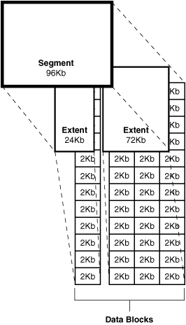

数据块、区段和段
2、数据块、区段和段
这一章描述了Oracle数据库服务器中逻辑存储结构的本质和相互关系。
本章包含下列内容
u 介绍数据块、区段和段
u 数据块概述
u 区段概述
u 段概述
介绍数据块、区段和段
Oracle为数据库中的所有数据分配逻辑数据库空间。数据库空间的分配单位是数据块、区段和段。图2-1显示了这些数据结构之间的关系：
图 2-1 段、区段、数据块的关系

Oracle保存数据的最小颗粒是数据块（也叫逻辑块、Oracle块或页）。一个数据块对应于磁盘上特定数量的物理数据库空间。
逻辑数据库空间的下一个层次是区段。一个区段是特定数目的连续数据块，用来保存特定类型的信息。
区段之上的逻辑数据库存储层次叫段。段是一系列的区段，每个区段都分配为一个特定的数据结构，段中所有的区段都保存在同一个表空间上。例如，每个表的数据都保存在它自己的数据段中，但每个索引数据都保存在索引段中。如果表或者索引被分区，每个分区都保存在它自己的段中。
Oracle为段分配空间的单位是区段。当一个段中现有的区段充满时，Oracle为这个段分配另一个区段。因为区段是按需分配的，段中的区段可能在磁盘上并不连续。
一个段或它的所有区段都保存在一个表空间上。在一个表空间内，一个段可以包含来自多个数据文件的区段；就是说，段可以跨数据文件。虽然如此，每个区段只能来自于一个数据文件。
虽然你可以分配额外的区段，但它的数据块是单独分配的。如果你为一个特定的实例分配一个区段，块会立刻分配到可用列表中。如果一个特定的实例没有分配区段，当高水位线移动时，会自动分配数据块。高水位线是段中可用空间和不可用空间的界线。
数据块概述
Oracle管理数据库的数据文件的存储空间的分配单位叫数据块。数据块是数据库使用的最小数据单位。相比之下，在物理的操作系统层次上，所有数据都保存为字节。每个操作系统都有一个块大小。Oracle访问数据是按Oracle数据块的倍数，不是操作系统块的倍数。
标准块大小由初始化参数DB_BLOCK_SIZE大小决定。另外，你可以制定不多于5个非标准块大小。数据块大小应该是操作系统块大小的倍数，这样可以最大限度的减少非必要的I/O。Oracle数据块是Oracle能够使用或者分配的最小存储空间。
数据块格式
Oracle数据块格式和数据块是否包含表、索引和聚集数据无关。图2-2描述了数据块的格式。
图2-2 数据块格式

头部（常量和变量）--Header（Common and Variable）
头部包含通用的块信息，比如块地址和段类型（比如数据或者索引）
表目录
数据块的这部分包含在本块有数据的表的信息
行目录
数据块的这部分包含块中实际行的信息（包括行数据区域的每个行的地址）
在数据块的首部分配了行目录空间之后，当行被删除时这个空间不会被回收。因此一个曾经包含50行的空块还在首部的行目录分配了100字节。Oracle只有在新行插入这个块时才会重用这部分区域。
首部
数据块头部、表目录和行目录合起来称作首部。块首部某些部分是固定大小的；整个块首部大小是个变量。平均来说，块首部的固定和变化部分总和在84到107字节之间。
行数据
数据块的这部分包含表或者索引数据。行可以跨块。
空闲空间 Free Space
空闲空间是为插入新行和需要更多空间的更新分配的空间（例如，当一个空值被更新为非空值）。
在表、聚集或者索引的段空间分配的数据块中，空闲空间可以保存事务入口（transaction entries）。每个访问块中一个或者多个行的INSERT、UPDATE、DELETE、SELECT....FOR UPDATE语句都需要事务入口。事务入口需要的空间依赖于操作系统。虽然如此，在大多数操作系统中事务入口需要的空间大约是23字节。
空闲空间管理
空闲空间可以自动管理也可以手动管理。
空闲空间可以在数据段内自动管理。段内空闲、已用空间都使用位图跟踪，而不使用空闲列表。自动段空间管理提供了下列优势：
u 使用容易
u 更好的利用空间，尤其是针对行大小不一致的对象。
u 在并发访问时提供更好的性能
u 在多实例情况下，更好的性能和空间利用率
当你创建本地管理的表空间时指定了自动段空间管理。表空间上创建的所有段都使用这种指定。
数据块的空闲空间的可用性和优化
两种类型的语句可以提高一个或多个数据块的可用空间：DELETE语句和将现有值更新为更小的UPDATE语句。随后的INSERT语句只有在下列情况下才能使用这些类型的语句释放的空间：
u 如果INSERT语句在相同的事务中且在空闲空间的语句之后，那么INSERT语句可以使用这个空间。
u 如果INSERT语句和空闲空间的语句（可能是另一个用户运行的）在不同的事务中，然后INSERT语句只有在另一个事务提交并且需要这个空间时才会使用这个空闲空间。
释放的空间在数据块的主要空闲空间中可能并不连续。Oracle只有在两种情况下会合并空闲空间（1）一个INSERT或UDPATE试图使用一个包含足够空闲空间来包含一个新行，并且（2）空间是分裂的，所以行无法插入块的连续部分中。Oracle只有在这种情况下才会挤压数据，因为不这样的话，Oracle系统会因为数据块的空闲空间的持续挤压而降低性能。
行链接和行迁移
在两种情况下，表中的一行数据太大无法插入一个单独的数据块中。在第一种情况下，行在第一次插入块时就非常大。在这种情况下，Oracle保存行的这些数据在段中现存的一个数据块链（一个或多个）中。行链接一般由大行产生，比如包含列类型为LONG或者LONG RAW的情况。行链接在这种情况下是不可避免的。
虽然如此，在第二种情况下，一个行开始可以保存在数据块中，但是后来整个行大小增加了并且块的剩余空间已经用光了。在这种情况下，假定整个行可以保存在新块中，Oracle移动正行的数据到一个新数据块中。Oracle在原始行的小段上保存了包含迁移行的块指针。迁移行的rowid保持不变。
当出现行迁移或者行链接时，相应的I/O性能会下降，因为Oracle必须扫描多余1个的数据块才能获得行的信息。
PCTFREE，PCTUSED和行链接
对手工管理表空间来说，对特定段中所有的数据块中针对插入和更新的使用空闲空间问题有两个空间管理参数：PCTFREE和PCTUSED。在你创建和修改表或聚集（拥有自己的数据段）时可以指定这两个参数。在创建和修改索引（拥有自己的索引段）时可以指定存储参数PCTFREE。
PCTFREE参数
PCTFREE参数设置了表中现存行可能的更新所保留的最小百分比的空闲空间。例如，假定你在CREATE TABLE语句中制定了下列参数：
PCTFREE 20
它规定了每个块针对块中现存行的可能更新需要保留的空间比例是20%。在行数据和块首部空间比例达到80%之前，新行可以增加到行数据区域，并且对应的信息可以加到首部的变量区域。图2-3描述了PCTFREE。
图 2-3 PCTFREE

PCTUSED参数
PCTUSED参数设定了在新行加到块之前行数据加上首部在块中占有的最小百分比。当一个块使用达到了PCTFREE的限制时，Oracle认为这个块对于新插入行不可用，直到使用百分比降到参数PCTUSED之下位置。只要达到了这个值，Oracle就只对表上现存数据的更新才使用空闲空间。例如，假定你在CREATE TABLE语句中指定了下列参数：
PCTUSED 40
这种情况下，只有块的使用空间小于40%（假定块的使用空间之前达到了PCTFREEE）时，数据段上的数据块才对插入新行可用。图2-4描述了这个情况。
图 2-4 PCTUSED

PCTFREE和PCTUSED如何协同工作
PCTFREE和PCTUSED协同工作优化了数据段中区段中数据块的空间使用。图2-5描述了两个参数的交互。
图2-5 使用PCTFREE和PCTUSED维护数据块的空闲空间

在一个新分配的数据块中，可用的插入空间是块大小减去块首部和空闲空间（PCTFREE）。更新块的现存数据可以使用任何可用空间。因此，更新可以减少块的可用个空间到小于PCTFREE的程度，这些节省的空间是为更新保留的，而不是插入。
对于每个数据和索引段，Oracle维护一个或多个空闲列表（free lists），就是已经分配给段区段拥有空闲空间大于PCTFREE的块列表。这些块对插入可用。当你执行INSERT语句时，Oracle检查表的空闲列表来尽可能寻找对一个可用的数据块并使用它。如果块中的空闲空间对INSERT语句需要的空间来说不够大，并且块至少达到PCTUSED，这样Oracle将这个块从空闲列表中删除。一个段中多个空闲列表可以减少并发插入对空闲列表的争用。
在提交DELETE和UPDATE语句之后，Oracle执行这个语句并检查使用空间是否在PCTUSED之下。如果是，块就进入事务空闲列表的起始部分，而且它是事务中第一个可用块。当事务提交之后，块的空闲空间对其他事务也可用。
区段概述
区段是数据库存储空间的一个逻辑单位，由多个连续的数据块组成。一个或多个区段组成一个段。当段中现存空间用光时，Oracle会对这个段分配一个新区段。
区段何时分配
当你创建一个表时，Oracle为表的数据段分配特定数量的数据块组成的一个初始化区段。虽然还没有行插入，初始化区段对应的这些Oracle数据块为表中的行预先保留。
如果段中初始化区段的数据块用光，需要更多的空间来保存新数据，Oracle自动为这个段分配一个增加区段。一个增加区段尺寸是段中之前分配区段同样大小或者更大。
为了维护方便，每个段的首部块包含这个段中区段目录。
确定区段的数量和大小
每个段定义的存储参数是基于区段的。存储参数在所有类型的段中都可以使用。它们控制Oracle如何为一个给定段分配数据库空间。例如，你可以指定为表数据初始化保留多少空间，或者你可以在CREATE TABLE语句的STORAGE子句中指定存储参数来限制表区段的数量。如果你没有指定表存储参数，然后它会使用表空间的默认存储参数。
你可以使用字典管理表空间也可以使用本地管理表空间，前者依赖数据字典表来跟踪空间使用，后者使用位图（而不是数据字典表）来跟踪使用和空闲空间。因为本地管理表空间性能更好和更容易管理，如果区段管理方式没有明确指定的话，非SYSTEM持久表空间默认是本地管理的。
本地管理的表空间可以使用统一区段大小或者系统自动指定的变化区段大小。当你创建表空间时，子句UNIFORM或者AUTOALLOCATE（系统管理）指定分配的类型：
u 对于统一大小区段，你可以指定区段大小或者使用默认大小，默认大小为1M。根据给定的块大小，要保证每个区段至少包含5个数据块。临时表空间管理区段的方式只能采取这种方式。
u 对于系统管理的区段，Oracle确定新增区段的最优大小，最小区段的大小是64K。如果表空间创建包括“segment space management auto”，如果数据库块大小是16k或者更高，然后Oracle管理段创建区段的最小尺寸是1M。这时持久表空间的默认管理方式。
存储参数INITIAL，NEXT，PCTINCREASE和MINEXTENTS在本地管理的表空间中不能在表空间级别指定。虽然如此，他们可以在段级别指定。在这种情况下，INITIAL，NEXT，PCTINCREASE和MINEXTENTS一起来计算段的初始值。计算了段大小之后，内部机制来决定每个区段的大小。
区段如何分配
Oracle分配区段的机制依赖于采取本地管理还是字典管理方式。
在表空间本地管理的情况下，Oracle先在表空间第一候选的数据文件上寻找可以分配给第一个区段的空间，然后查看数据文件的位图来查看是否有足够数目的空闲块。如果数据文件没有足够的空闲块，然后Oracle会转向新的数据文件。
何时分配区段
Oracle数据库提供了一个段顾问（Segment Advisor）来确定一个对象通过对象内碎片空间重组是否能够有足够的空间。
通常来说，一个段中的区段不会返回空间给表空间，除非你删除包含这个段中数据的模式对象（使用DROP TABLE或者DROP CLUSTER命令）。但下列情况例外：
u 表或聚集的拥有者或者拥有DELETE ANY权限的用户，可以使用TRUNCATE ....DROP STORAGE 语句来截断表或者聚集。
u 一个DBA可以使用下列SQL语法来释放没有使用的区段：
ALTER TABLE table_name DEALLOCATE UNUSED;
u 如果回滚段指定了最优大小（OPTIMAL size），Oracle会定期的释放段中的一个或者多个区段。
当释放了区段之后，Oracle会更新数据文件的视图（本地管理表空间）或者更新数据字典（字典管理的表空间）来将重新获得的区段标示为可用。在释放区段中的块上所有数据都无法访问。
非聚集表中的区段
一个非聚集表创建之后，除非你截断（truncate）它，数据库段中分配的所有数据块都只属于这个表。Oracle在一个块有足够空间的情况下插入新行。甚至你删除了表的所有行，Oracle也不会释放数据块，表空间的其他对象也无法使用这些数据块。
在你删除一个非聚集表后，它的空间可以被回收给其他需要空间的区段使用。Oracle为表空间回收表数据段和索引段的所有区段，这些区段可以被同一表空间的其他模式对象使用。
在字典管理的表空间下，当一个段需要比现存区段更大的区段时，Oracle标识和合并收回的区段来组成一个更大的区段。这个叫做联合区段。联合区段在本地管理的表空间是不必要的。因为不管它是否从一个区段还是多个区段收回，总是存在连续的空闲空间等待分配。
聚集表的区段
聚集表保存为聚集创建的数据段的信息。因此，如果你删除聚集中的一个表，聚集仍然保持聚集中的其他表的数据，而且不会回收区段。你也可以截断聚集（非Hash聚集）来释放区段。
实体化视图和其日志的区段
Oracle针对实体化视图和实体化视图日志的操作释放区段的方式类似于表和聚集。
索引的区段
只要索引存在，索引段中的所有区段都属于索引段。当你删除索引或者相关的表或者聚集时，Oracle释放区段，本表空间的其他对象可以使用这部分空间。
临时段的区段
当Oracle执行完一个需要临时段的语句时，Oracle自动删除临时段，并将段的区段释放给对应的表空间。一个简单的排序在执行语句的用户的临时表空间中分配一个临时段，然后会释放区段给表空间。
多重排序可以使用临时表空间中专有的针对排序的排序段。这些排序段在实例运行过程中只分配一次，它们在排序之后不会释放，因为其他的多重排序还要使用。
临时表中的临时段包含一个事务或者会话的多个语句涉及的数据。Oracle在事务或者会话的末尾删除临时段，释放分配给段的区段给关联的表空间。
回滚段的区段
Oracle周期性的检查数据库的回滚段，来检查是否超过了它们的最优尺寸。如果回滚段远大于最优尺寸（也就是说，有太多的区段），然后Oracle会自动从回滚段中释放一个或者多个区段。、
段概述
一个段是一系列的区段的集合，包含表空间内一个特定逻辑存储结构的所有数据。例如，对每个表Oracle会分配一个或者多个区段来组成表数据段，对每个索引Oracle也会分配一个或者多个区段来组成它的索引段。
数据段介绍
Oracle数据库中的一个数据段包含下列之一的所有数据：
u 一个非分区表或者非聚集表
u 一个分区表的一个分区
u 聚集表
Oracle在你使用CREATE命令创建表或者聚集时创建数据段。
表或者聚集的存储参数指定了数据段的区段如何分配。你可以直接使用适当的CREATE或者ALTER语句来设置这些存储参数。这些存储参数影响数据获取和相关对象的数据段的存储效率。
索引段介绍
Oracle数据库中的每个非聚集索引都包含一个单独的索引段来存储所有的数据。对一个分区索引来说，每个分区都有一个简单索引段来存储它的数据。
Oracle在你执行CREATE INDEX命令时创建一个索引或者分区索引的索引段。在这个语句中，你可以指定索引段的区段和创建这个索引段的表空间这些存储参数。（表段和关联索引段可以在不同的表空间上）。设定这些存储参数直接影响了数据存取和存储的效率。
临时段介绍
当执行查询时，SQL语句解析和执行的中间阶段常常需要临时工作空间。Oracle自动分配这些叫做临时段的磁盘空间。典型的是Oracle需要一个临时段来作为排序区域。如果排序操作能够在内存中进行或者使用索引找到其他的方式来执行操作，Oracle不会创建这个段。
临时段需要的操作
下列语句有时候会需要使用临时段：
u CREATE INDEX
u SELECT .。。。 ORDER BY
u SELECT DISTINCT 。。。
u SELECT 。。。 GROUP BY
u SELECT ．．． UNION
u SELECT ．．． INTERSECT
u SELECT ．．． MINUS
一些非索引连接和关联子查询可能需要使用临时段。例如，如果一个查询包含DISTINCT，GROUP BY，ORDER BY子句，Oracle可能需要2个临时段空间。
临时表和它的索引的段
Oracle可以对临时表和临时表索引分配临时段。临时表保存的数据只在一个事务或者会话存续期间保存。
临时段如何分配
Oracle分配临时段的方式针对查询和临时表而不同。
查询的临时段分配
Oracle在临时表空间的一个用户执行命令的会话中按照需要分配临时区段。在命令CREATE USER和ALTER USER中的TEMPORARY TABLESPACE子句中指定临时表空间。
如果用户定义中不包含临时表空间，然后默认临时表空间为SYSTEM表空间。表空间的默认存储参数指定了临时段的区段的属性。Oracle在语句完成时会删除临时段。
因为临时段的分配和释放非常频繁，所以需要针对临时段专门创建一个表空间。这样做的话，你可以跨磁盘设备分布I/O，而且可以避免SYTEM表空间和其他包含临时段的表空间的碎片。
针对排序操作的临时段的改变记录除了临时段的空间管理操作之外都不保存在重做日志中。
临时表和索引的临时段的分配
当Oracle发布第一个INSERT到表的命令时会分配临时表的段。（这可以是一个内部的插入操作，比如CREATE TABLE AS SELECT）。临时表的第一个INSERT会分配表和其索引的段、创建索引的根页和分配需要的LOB段。
用户把临时表的段创建在自己的临时表空间上。
Oracle在事务末尾会删除事务型临时表的段，在会话末尾会删除会话型临时表的段。如果其他的事务或者会话共享这个临时表的使用，段会包含表中保留的数据。
自动撤销管理介绍（Automatic Undo Management）
Oralce维护了数据库的未生效修改信息。这些信息包含事务动作的记录，总体上叫做undo。Oracle使用undo处理如下事情：
u 回滚活动事务
u 恢复中断事务
u 提供一致性读
u 从逻辑错误中恢复
自动撤销管理是基于undo表空间的。你可以在一个撤销表空间中分配空间，而不用分配多个不同大小的回滚段。
自动撤销管理降低了管理回滚段空间的复杂性，让你可以指定undo在被重写之前会保持多长时间。Oracle强烈建议你使用回滚表空间来管理undo而不是使用回滚段。这样系统会自动调整undo数据在undo表空间中的持续周期，来满足需要查询这些undo信息的需要。如果当前undo表空间有足够的空间，你可以设定UNDO_RETENTION参数为一个低阀值，所以系统可以至少保持参数指定的使间内的undo信息。
使用V$UNDOSTAT视图来监视和配置你的数据库系统来高效使用undo表空间。V$UNDOSTAT显示不同的undo和事务统计，例如这个实例消耗的undo空间大小。
Oracle数据库包含一个undo顾问，可以提供建议来帮助你的undo环境的构建。
Undo模式
Undo模式提供了从手动撤销管理到自动撤销管理的迁移的灵活性。一个数据库系统可以在手动撤销管理或者自动撤销管理模式下运行。在手动撤销管理模式下，undo空间通过回滚段管理。自动管理模式下，undo空间通过undo表空间来管理。要使用自动撤销管理模式，数据库管理员只需要针对每个实例创建一个undo表空间，并设置UNDO_MANAGEMENT初始化参数为AUTO。强烈建议你在自动撤销管理模式下运行。
Undo限额
在自动撤销管理模式下，系统控制专门分配给事务的undo段，还能控制undo段的空间分配。一个糟糕的事务可能会消耗大量的undo空间，从而瘫痪整个系统。资源管理器指定UNDO_POOL是一个控制大事务的明确方法。这样数据库管理员可以将用户分成不同的消费组，每个消费组分配一个最大的undo空间限制。当一个组整个消耗的undo空间超过了这个限制，它的用户不能执行更多更新，除非本组其他用户的事务结束，undo空间释放。
UNDO_POOL的默认值是UNLIMITED，这样用户可以消耗整个undo表空间的undo空间。数据库管理员可以直接使用UNDO_POOL来限制特定的用户。
自动Undo保持
Oracle 10g数据库自动调整undo持续周期的参数。Undo持续周期指定了老的undo信息必须保留的时间，就是提交的事务的undo信息可以覆盖的时间。数据库收集使用统计信息，基于这些统计信息和undo表空间的大小来调整undo持续周期。假定自动撤销管理功能被激活，数据自动象如下那样调整undo持续周期：
u 对于AUTOEXTEND的undo表空间，数据库调整undo持续周期稍微长于最长的执行SQL。另外，如果空闲空间足够，调整的undo持续周期不低于UNDO_RENTENTION初始化参数的大小。
u 针对固定大小的undo表空间，数据库调整undo持续周期的尽可能的最大值。这意味着总是提供最长可能的持续周期，避免undo表空间空间用尽或者近乎用尽的情况。UNDO_RENTENTION初始化被忽略，除非启动了持续保证。
u Undo持续的自动调整不支持LOB类型。LOB列的持续值调整设置为UNDO_RETENTION参数的值。
对于同样大小自动扩展和固定的大小的undo表空间，根据你运行查询的不同，在固定大小表空间的调整方式倾向于提供长的持续周期。这使得回滚操作尽可能的回滚并最大化长时间运行查询的undo数据。
区段视图
使用V$TRANSACTION和V$ROLLSTAT来监控事务和撤销信息。对于自动撤销管理来说，V$ROLLSTAT的信息反映了自动撤销段撤销管理的行为。
V$UNDOSTAT视图显示了统计数据的直方图来显示系统是否工作良好。你可以看到实例中诸如undo消耗统计、事务并发、查询长度的统计。使用这个视图，你可以更好的估计当前负载下需要的undo空间的大小。